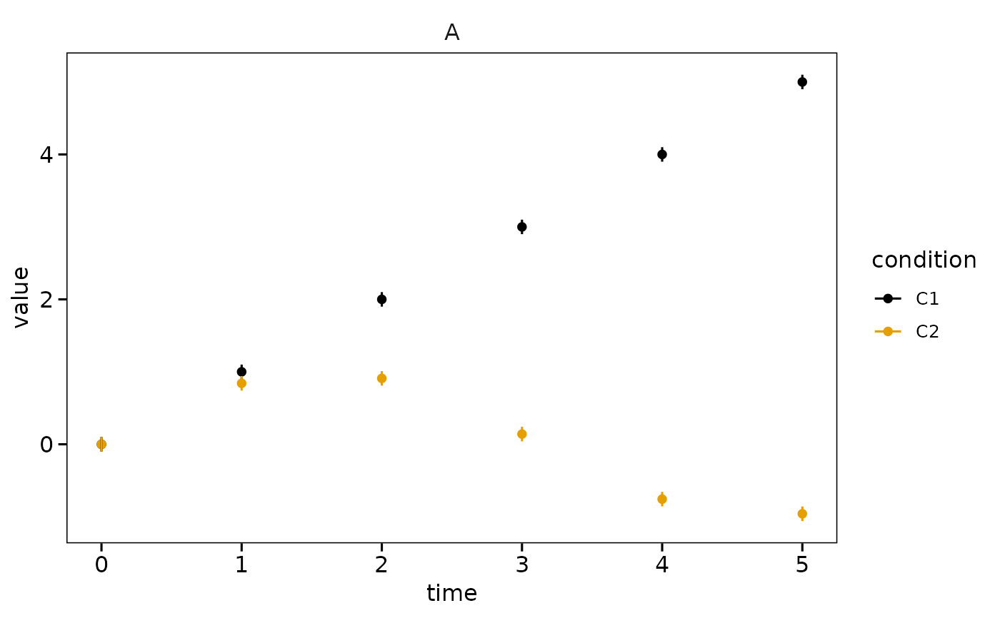
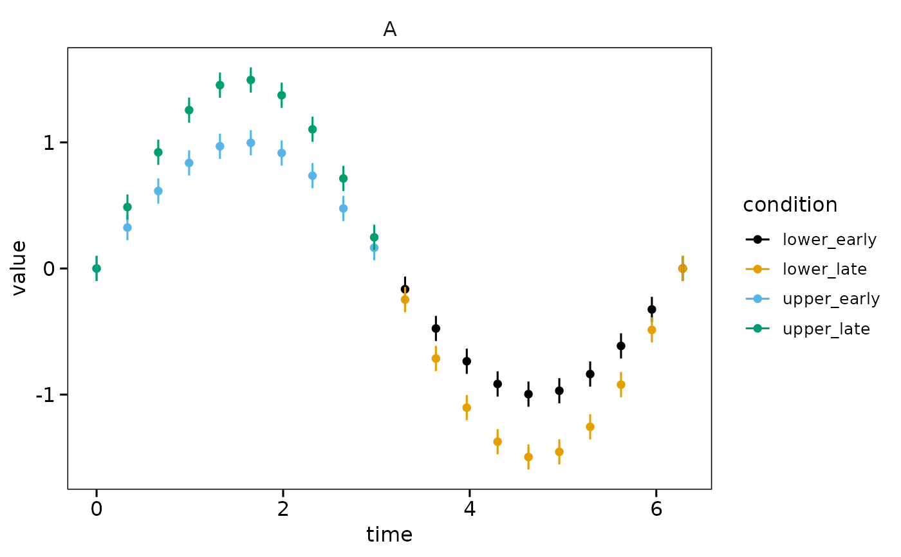

A datalist stores time-course data as a named list of data frames, one per condition.
Usage
as.datalist(x, ...)
# S3 method for class 'data.frame'
as.datalist(x, splitBy = NULL, keepCovariates = NULL, ...)
# S3 method for class 'list'
as.datalist(x, names = NULL, ..., condition.grid = attr(x, "condition.grid"))
# S3 method for class 'datalist'
names(x) <- value
is.datalist(x)
# S3 method for class 'datalist'
c(...)
datalist(...)Arguments
- x
object of class
data.frameorlistof data frames. Data frames must provide the columns "name", "time" and "value". The columns "sigma" and "lloq" are optional and default toNAand-Inf.- ...
for
datalist(), named data frames; forc(), datalists; for theas.datalist()methods, not used.- splitBy
character, the columns whose combined values identify a condition. Default
NULLuses all columns except "name", "time", "value", "sigma" and "lloq".- keepCovariates
character, additional columns kept in the condition grid. Default
NULL.- names
character, the condition names. Default
NULLtakes them fromnames(x).- condition.grid
data frame with one row per condition. Default is the
condition.gridattribute ofx; if that isNULL, a grid with the single columncondition.- value
character, the new condition names. The rows of the condition grid are renamed accordingly.
Details
The standard columns of the data frames are "name" (observable
name), "time", "value", "sigma" (uncertainty, can be NA) and "lloq"
(lower limit of quantification, -Inf by default; NA means no limit).
The attribute condition.grid holds one row per condition with further
information such as doses; see covariates(). Renaming a datalist renames
the rows of the condition grid.
Examples
## Generate datalist from scratch
mydata1 <- data.frame(name = "A",
time = 0:5,
value = 0:5,
sigma = .1,
lloq = -0.5)
mydata2 <- data.frame(name = "A",
time = 0:5,
value = sin(0:5),
sigma = .1)
data <- datalist(C1 = mydata1, C2 = mydata2)
print(data)
#> C1:
#> name time value sigma lloq
#> 1 A 0 0 0.1 -0.5
#> 2 A 1 1 0.1 -0.5
#> 3 A 2 2 0.1 -0.5
#> 4 A 3 3 0.1 -0.5
#> 5 A 4 4 0.1 -0.5
#> 6 A 5 5 0.1 -0.5
#> C2:
#> name time value sigma lloq
#> 1 A 0 0.0000000 0.1 -Inf
#> 2 A 1 0.8414710 0.1 -Inf
#> 3 A 2 0.9092974 0.1 -Inf
#> 4 A 3 0.1411200 0.1 -Inf
#> 5 A 4 -0.7568025 0.1 -Inf
#> 6 A 5 -0.9589243 0.1 -Inf
plot(data)

## Split one data.frame into conditions, keeping a covariate per condition
t <- seq(0, 2*pi, length.out = 20)
long <- data.frame(name = "A", time = c(t, t), sigma = 0.1,
amplitude = rep(c(1, 1.5), each = 20),
phase = rep(c("early", "late"), each = 20),
stage = rep(rep(c("upper", "lower"), each = 10), 2))
long$value <- long$amplitude * sin(long$time)
data <- as.datalist(long, splitBy = c("stage", "phase"), keepCovariates = "amplitude")
print(data)
#> upper_early:
#> name time value sigma lloq
#> 1 A 0.0000000 0.0000000 0.1 -Inf
#> 2 A 0.3306940 0.3246995 0.1 -Inf
#> 3 A 0.6613879 0.6142127 0.1 -Inf
#> 4 A 0.9920819 0.8371665 0.1 -Inf
#> 5 A 1.3227759 0.9694003 0.1 -Inf
#> 6 A 1.6534698 0.9965845 0.1 -Inf
#> 7 A 1.9841638 0.9157733 0.1 -Inf
#> 8 A 2.3148577 0.7357239 0.1 -Inf
#> 9 A 2.6455517 0.4759474 0.1 -Inf
#> 10 A 2.9762457 0.1645946 0.1 -Inf
#> lower_early:
#> name time value sigma lloq
#> 11 A 3.306940 -1.645946e-01 0.1 -Inf
#> 12 A 3.637634 -4.759474e-01 0.1 -Inf
#> 13 A 3.968328 -7.357239e-01 0.1 -Inf
#> 14 A 4.299022 -9.157733e-01 0.1 -Inf
#> 15 A 4.629715 -9.965845e-01 0.1 -Inf
#> 16 A 4.960409 -9.694003e-01 0.1 -Inf
#> 17 A 5.291103 -8.371665e-01 0.1 -Inf
#> 18 A 5.621797 -6.142127e-01 0.1 -Inf
#> 19 A 5.952491 -3.246995e-01 0.1 -Inf
#> 20 A 6.283185 -2.449294e-16 0.1 -Inf
#> upper_late:
#> name time value sigma lloq
#> 21 A 0.0000000 0.0000000 0.1 -Inf
#> 22 A 0.3306940 0.4870492 0.1 -Inf
#> 23 A 0.6613879 0.9213191 0.1 -Inf
#> 24 A 0.9920819 1.2557497 0.1 -Inf
#> 25 A 1.3227759 1.4541004 0.1 -Inf
#> 26 A 1.6534698 1.4948767 0.1 -Inf
#> 27 A 1.9841638 1.3736600 0.1 -Inf
#> 28 A 2.3148577 1.1035859 0.1 -Inf
#> 29 A 2.6455517 0.7139211 0.1 -Inf
#> 30 A 2.9762457 0.2468919 0.1 -Inf
#> lower_late:
#> name time value sigma lloq
#> 31 A 3.306940 -2.468919e-01 0.1 -Inf
#> 32 A 3.637634 -7.139211e-01 0.1 -Inf
#> 33 A 3.968328 -1.103586e+00 0.1 -Inf
#> 34 A 4.299022 -1.373660e+00 0.1 -Inf
#> 35 A 4.629715 -1.494877e+00 0.1 -Inf
#> 36 A 4.960409 -1.454100e+00 0.1 -Inf
#> 37 A 5.291103 -1.255750e+00 0.1 -Inf
#> 38 A 5.621797 -9.213191e-01 0.1 -Inf
#> 39 A 5.952491 -4.870492e-01 0.1 -Inf
#> 40 A 6.283185 -3.673940e-16 0.1 -Inf
plot(data)

print(covariates(data))
#> stage phase amplitude
#> upper_early upper early 1.0
#> lower_early lower early 1.0
#> upper_late upper late 1.5
#> lower_late lower late 1.5